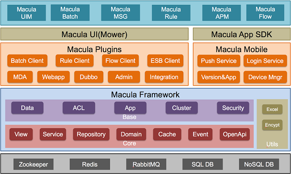

概述
技术架构
Macula开发平台是选用一些广泛使用的、优秀的开源框架作为底层实现，并在这些开源框架上整合调整，以最佳实践的方式构建而来的开发平台。所以熟悉和了解所使用的开源框架，是了解和深入Macula开发平台的前提。
Macula开发平台使用的开源技术有：
- Spring Framework：Spring作为优秀的开源框架，也是Macula平台的主线框架,Macula平台的开发均围绕SpringFramework，并在此基础上引入相应的扩展。
- JPA Standard / Hibernate：选用J2EE标准的JPA规范作为数据存取层的实现，Hibernate作为优秀的JPA实现，在Macula平台中，默认使用Hibernate的JPA实现。
- Freemarker：Freemarker作为展示模版的优秀框架，可通过Macro宏、标签等多种方式代理JSP，除了Freemarker的性能与JSP不相上下外，Freemarker模板可根据多种方式载入，如类路径、Web路径、文件路径等，这样Freemarker模版可以方便的打包到业务插件JAR中。
- JSON：当前数据的传输标准，除XML外，JSON以其轻巧、易读以及传输量小的优点，在Macula平台中，在Ajax领域，使用JSON作为数据交换格式。
- jQuery/Bootstrap: 前端界面采用了标准的HTML5，使用jQuery和Bootstrap开发前端。

功能规划
当前Macula平台包含Framework、Plugins、Mobile、UI、App SDK等部分。如下图： 
Macula Framework：
- macula-core：用来解决开发过程中，各层的开发基础以及部分基础代码，包括Repository基类、Domain基类、异常处理、校验、国际化等。
- macula-utils：助手模块，提供常用助手类，如excel导入导出、加解密、数字证书管理等功能。
- macula-base：包括三个子模块，分别是dataset、security和app，dataset用来提供数据源、数据集、参数和枚举等数据来源的定义；security用来解决用户身份的认证、用户角色授权、用户权限系统、菜单资源授权、用户在线信息、系统信息、强制用户登出、用户Session控制等。app将系统中所有的实例管理起来，为监控等进一步的应用做准备。
Macula Plugins:
除了上述介绍的部分模块外，Macula平台还引入插件的机制，通过在项目开发中提炼出一些有用的插件，加入了Macula平台中来，从而使得Macula平台更具有生命力:
- macula-plugins-admin：用来管理用户权限、菜单资源管理、Action资源管理、资源注册、用户组注册等与界面相关的功能；
- macula-plugins-mda：模型驱动的快速开发插件，可以基于模型快速生成CRUD应用，解决大部分的重复工作；
- macula-plugins-webapp：该模块是WEB系统的入口点，处理主界面的显示，包括登录界面、菜单展现等，所有WEB系统的相关资源，如javascript库、FreeMarker的布局模板，全局的配置文件等也包含在这个模块中；
- macula-plugins-dubbo：如果需要基于Dubbo，则依赖该模块即可；
- macula-plugins-integration：集成模块，主要定位和其他系统的集成交互，比如log发送、事件送出等。
Macula Mobile
Macula Mobile模块主要提供App开发过程中后端的通用服务，比如推送、登录、版本管理、设备管理等功能。
Macula UI
基于jQuery和Bootstrap，我们开发了WEB应用的HTML5开发框架，该框架定义了CSS和Javascript组件，制定了Macula项目标准的前后端界面。
通用服务能力
同时，基于Macula开发平台，也会引入相应的通用服务，比如统一认证、统一消息、统一规则引擎、统一流程引擎、统一调度平台等服务。